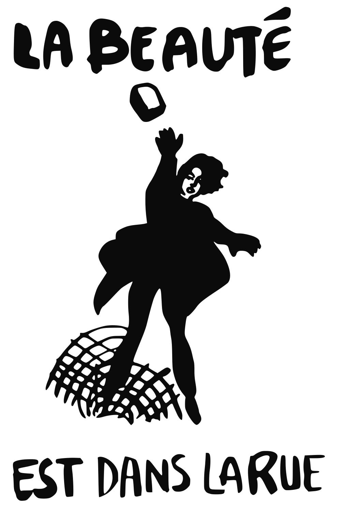

fall/winter 2017 course descriptions
courses will be offered online through google hangouts on air, with the possibility of hybrid courses being offered. in order to sign up for a class, click the sign up link provided in the course page. for more information, check for announcements on this blog or my twitter (@schizoanalytic). preview sessions in which the syllabus, expectations, and primary themes of each course will be offered the week previous to the first session. each course will carry a cost of 75USD, though price reductions will be considered on a case by case basis. click the title of the course to be redirected to the course page.
strongart.h/mus.h 436: afrofuture//afrosurvival. seminar.
taking futurism away from fascism has been the praxis of black musicians since diaspora. what is commonly referred to as afrofuturism remains the primary contemporary example of such praxis. this course challenges the contemporary understanding of afrofuturism and attempts to reframe it as afrosurvivalism. topics discussed will include p-funk, nationalism, nuclear fission, dromocracy, kanye west, and communalism.

art.h/hist/phil/psy.g 478: situationist international. seminar.
“first of all, we think the world must be changed.” with these words began the revolutionary organisation led by guy debord. with the publication of ‘the society of the spectacle,’ ‘the revolution of everyday life,’ and ‘on the poverty of student life’ came may 68. in this course, we will study the formation of situationist international, the theoretical and artistic contributions of the situationists, and the revolution of may 68.
biol/so.lo 289: drug culture, cryptomarkets, and pharmacology. lecture//seminar.
this course will explore the history of cryptomarkets such as alphabay, dream, and silk road, the experience and culture of drug use, and the pharmacology of specific drugs. topics covered will also include cryptocurrencies, pgp encryption, and psychonauts. through this course, students will also be introduced to the history and effects of the war on drugs.